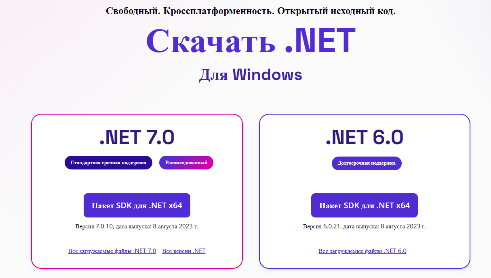

|
Среды программирования
(или как их еще называют, среды разработки) - это программы, в
которых программисты пишут свои программы. Иными словами, среда
программирования служит для разработки ( написания) программ и
обычно ориентируется на конкретный язык или несколько языков
программирования (в этом случае языки, обычно, принадлежат одной
языковой группе, например, Си-подобные). Интегрированная среда
программирования содержит в себе все необходимое для разработки
программ:
- редактор
с подсветкой синтаксиса
конкретного языка программирования. В нем
программист пишет текст программы, так
называемый программный код;
- компилятор.
Он, как мы уже с вами знаем, транслирует
программу, написанную на высокоуровневом языке
программирования в машинный язык (машинный код),
непосредственно понятный компьютеру. Иногда
вместо компилятора (либо вместе с ним)
используется интерпретатор, для программ,
написанных на интерпретируемых языках
программирования;
- отладчик.
Служит для отладки программ. Как мы все знаем,
ошибки в программах допускают абсолютно все: и
новички, и профессионалы - они могут быть
синтаксическими (обычно они выявляются еще на
стадии компиляции) и логическими. Для
тестирования программы и выявления в ней
логических ошибок служит отладчик.
Компьютер алгоритмических языков не понимает. Поэтому для
создания программ используются языки программирования. Впрочем,
языки программирования компьютер тоже не понимает. Поэтому ему
надо как-то объяснить, что означают те или иные слова. Это
делается с помощью специальных программ:
компиляторов или интерпретаторов.
Компилятор – это
программа, которая считывает текст программы (исходные коды) и
преобразует их в исполняемый файл – программу.
Интерпретатор также
считывает текст программы, но при этом исполняемый файл не
создаётся, а команды, написанные в исходных кодах, выполняются
интерпретатором непосредственно во время считывании.
Основными недостатками интерпретаторов являются низкое
быстродействие и необходимость наличия у пользователя
программы-интерпретатора. Компилятор же создаёт «готовый к
употреблению» исполняемый файл, который достаточно разместить
где-нибудь на компьютере пользователя и начать работать с
программой. Однако во многих случаях используются именно
интерпретаторы.
В давние времена практически все компиляторы работали только с
командной строкой. Компиляция
выполнялась примерно такой командой:
TURBO MYPROG.PAS
Где первое слово команды – имя программы-компилятора, второе –
имя исходного файла. Это, конечно, упрощённая форма. На самом
деле ещё использовались различные
дополнительные параметры.
Затем появились более сложные компиляторы. И хотя я по
привычке называю их компиляторами, на самом деле это уже были
программные комплексы, состоящие из нескольких программ, таких
как редактор исходного кода, отладчик, непосредственно
компилятор и другие полезные утилиты.
Например современный компилятор для кроссплатформенной
разработки приложений пакет
SDK для .NET . Скачать пакет можно по ссылке
Скачать
.NET (Linux, macOS и Windows) (microsoft.com)

Скачать .NET Framework 4.8.1
Это набор библиотек и средств, с
помощью которых разработчики могут создавать приложения и
библиотеки .NET. Он содержит следующие компоненты, которые
используются для сборки и запуска приложений:
- Интерфейс командной строки .NET.
- Среда выполнения и библиотеки .NET.
- dotnet Драйвер.
Интерфейс командной строки
(CLI) .NET — это кроссплатформенная цепочка инструментов для
разработки, сборки, запуска и публикации приложений .NET.
Набор команд для создания приложения:
Основные команды:
- new -
dotnet new - создает проект,
файл конфигурации или решений на основе
указанного шаблона.
- restore -
dotnet restore — восстанавливает
зависимости и средства проекта.
- build - Команда
dotnet build выполняет
сборку проекта и его зависимостей в набор
двоичных файлов.
- publish -
dotnet publish
компилирует приложение, считывает его
зависимости, указанные в файле проекта, и
публикует итоговый набор файлов в каталоге
- run - dotnet
run — это удобное средство для
запуска приложения из исходного кода одной
командой..
- test - Команда dotnet test
служит для выполнения модульных тестов в
решении.
- vstest - Команда
dotnet vstest запускает
приложение командной строки VSTest.Console для
выполнения автоматического модульного
тестирования.
- pack- Команда
dotnet pack выполняет сборку
проекта и создает пакеты NuGet.
- clean - Команда
dotnet clean очищает
выходные данные предыдущей сборки.
- sln - Команда
dotnet sln предоставляет удобный
способ перечислять и изменять проекты в файле
решений.
- help - Команда
dotnet help открывает страницу
сайта docs.microsoft.com с подробной справочной
информацией об указанной команде.
- store - dotnet
store — сохраняет указанные
сборки в хранилище пакетов среды выполнения.
Такие программные комплексы существенно облегчили жизнь
программистам. Общее название таких программных комплексов –
средства разработки программного
обеспечения (или интегрированная среда разработки).
Самое большое отличие компиляторов второго поколения от своих
более старших собратьев – это мощный редактор исходного кода. В
окне редактора можно было работать одновременно с несколькими
файлами. Из окна редактора нажатием одной клавиши можно было
вызвать компилятор и создать программу.
Кроме того появились мощные средства отладки и поиска ошибок в
исходных кодах.
Следующий шаг – это визуальные
средства разработки. К ним относятся почти все
современные программные продукты для разработки ПО. Визуальные
средства разработки имеют графический интерфейс и выполняют
огромное количество рутинных операций вместо программиста.
Общее описание работы среды программирования
Давайте сейчас подробно рассмотрим
процесс разработки
программы в среде программирования, от момента начала написания
кода программы до получения скомпилированного экзешника (файла с
расширением .exe), который уже можно непосредственно запускать
вне среды разработки. Как правило, для того, чтобы выполнить
программу на С#, надо пройти шесть
этапов:
- Первый этап - редактирование;
- Второй этап - предварительная
(препроцессорная) обработка;
- Третий этап - компиляция;
- Четвертый этап - компоновка;
- Пятый этап - загрузка;
- Шестой этап - выполнение.
Редактирование.
Это первый этап разработки программы в среде программирования и
представляет он собой редактирование файла (исходного файла,
который в последствии будет содержать код программы). Он
выполняется с помощью редактора программ, который напоминает нам
обычный текстовый редактор, такой как блокнот, word и т.д.
Программист набирает в этом редакторе свою программу на С#
и, если это необходимо, вносит в нее различные изменения или
исправления.
Предварительная (препроцессорная)
обработка. На этом этапе программист дает
команду компилировать программу. Но прежде чем компилятор
приступит к компиляции вашей программы, производится
предварительная обработка программы.
Компиляция. На этом
этапе компилятором проверяется текст программы на наличие
синтаксических ошибок и затем, если все хорошо, текст программы
с подстановками, сделанными на предыдущем этапе, преобразуется в
машинный код (код на языке, уже непосредственно понятный
компьютеру). Иногда его еще называют объектным.
Компоновка.
Следующий этап называется компоновка. Программы на С#
обычно содержат ссылки на функции, определенные где-либо вне
самой программы, например, в стандартных библиотеках или в
личных библиотеках групп программистов, работающих над данным
проектом. Объектный код, созданный компилятором, обычно содержит
«дыры» из-за этих отсутствующих частей. Компоновщик связывает
объектный код с кодами отсутствующих функций, чтобы создать
исполняемый загрузочный модуль (без пропущенных частей).
Получаем в итоге файл с расширением .exe (для Windows).
Загрузка. Следующий
этап называется загрузка. Перед выполнением программа должна
быть размещена в оперативной памяти компьютера. Это делается с
помощью загрузчика, который забирает исполняемый загрузочный
модуль с диска (наш файл с расширением .exe) и перемещает его в
оперативную память.
Выполнение. И
наконец, рассмотрим самый последний этап - выполнение. С этого
момента компьютер под управлением своего ЦПУ (центральное
процессорное устройство) начинает последовательно выполнять в
каждый момент времени по одной команде программы. Эти моменты
времени носят название такт, каждый процессор имеет свою
тактовую частоту, которую задает его внутренний тактовый
генератор. Чем более высокая частота работы вашего процессора,
тем, соответственно, лучше и тем быстрее выполняются ваши
программы.
Основные возможности интегрированных сред разработки программ.
Для каждой из них характерно наличие следующих компонент:
-
Единая интерактивная оболочка, обеспечивающая вызов
всех других компонент, не выходя из среды, с широким
использованием функциональных клавиш;
-
Текстовый редактор для набора и
редактирования исходных текстов программ. В недавнем прошлом
в отечественной традиции использовался именно термин исходный
текст, впоследствии стал использоваться термин исходный
код (source code);
-
Система поддержки сборки (build), то есть компиляции
проектов из исходных кодов, включающая компилятор с
исходного реализуемого языка и компоновщик
(linker) объектных бинарных кодов в единый
исполняемый код (загрузочный модуль); компоновщик
используется либо штатный, входящий в состав операционной
системы, либо специфичный для данной среды;
-
Отладчик (debugger) для отладки программ
в среде с помощью типичного набора команд: установить
контрольную точку остановки; остановиться в заданной
процедуры (методе); визуализировать значения переменных
(или, на более низком уровне, регистров и областей памяти).
Современные текстовые редакторы в интегрированных средах
обеспечивают также режим автоматического
завершения кода (code completion), который в них включен по умолчанию
и в котором редактор среды подсказывает разработчику кода
возможные и синтаксически правильные его продолжения - например,
отсутствие закрывающей скобки, отсутствие точки с запятой;
возможные варианты имен методов при вызове метода от объекта
какого-либо определенного класса, и т.д.
В современных версиях интегрированных сред появились также
следующие возможности (компоненты):
-
Профилировщик (profiler) - инструмент
для накопления и анализа статистических данных, полученных в
результате исполнения программы под управлением
интегрированной среды: число вызовов процедур (методов),
объем памяти, используемой при выполнении программы, и т.д.
-
Рефакторинг
(refactoring) [4]
- инструментарий систематических групповых
модификаций программ в среде, без принципиальных изменений
их функциональности, с целью улучшения кода. К типичным
подобным действиям относится, например, изменение имени
метода в его определении и во всех использованиях,
добавление его аргумента, добавление try/catch - блока для
обработки ранее не учтенного исключения и т.п.
-
Генератор тестов (unit test generator) -
инструмент для генерации типовых тестов для тестирования
модулей (units)
- методов или процедур - с различными возможными сочетаниями
значений аргументов; типичные примеры - инструмент JUnit в
интегрированных Java-средах и аналогичный инструмент NUnit в
среде Visual Studio
-
Система управления версиями исходных кодов (source code
control system) или инструмент интеграции
среды с одной из существующих версионных систем (CVS, RCS,
Mercurial, Visual SourceSafe и др.) - поддержка управления
версиями файлов исходных кодов проектов в среде при
сопровождении программ
-
Инструменты поддержки командной разработки программ
(teamwork) - этапов жизненного цикла
программы (требования и спецификации, проектирование,
реализация, тестирование), распределения заданий по
разработке среди участников команды программистов, контроля
выполнения заданий менеджером проекта. В среде Visual Studio
такая компонента называлась сначала Team
Foundation Server (TFS), а, начиная с версии Visual
Studio 2013, она реализована в виде облачного интерфейса
и получила название Visual Studio Online.
-
Инструменты анализа кода
(code analysis) -
его семантической корректности: отсутствие некоторых видов
ошибок, обнаруживаемых обычно при исполнении, например,
недостижимые условия; отсутствие необходимых проверок и
полномочий безопасности и др. Подробнее об этих особенно
важных для меня, в силу моих профессиональных интересов,
возможностях рассказано ниже, в "Visual
Studio 2013 и ее возможности для надежных и безопасных
вычислений (trustworthy computing)" . Эти
возможности соответствуют духу и принципам надежных
и безопасных вычислений (trustworthy computing),
сформулированным в 2002 г. корпорацией Microsoft и
последовательно воплощаемым этой фирмой в жизнь. Также в
современные среды встраиваются инструменты анализа кода в
терминах метрик (metrics),
характеризующих его сложность, -
например, цикломатическое число графа потоков управления в
программе, степень сцепления (взаимосвязанности) классов и
т.д.
-
Инструменты визуализации сгенерированного бинарного кода -
методов, переменных, их имен и т.д. Например, в среде Visual
Studio для этой цели имеется утилита ildasm (IL
disassembler), позволяющая визуализировать единый
промежуточный (бинарный) код платформы .NET - Common
Intermediate Language - CIL, сгенерированный одним из
компиляторов среды
-
Инструменты "запутывания" кода (obfuscation),
выполняющие именно с этой целью замену имен элементов кода -
классов, методов, полей и т.д. на непонятные, "случайные",
"запутанные" имена, с целью затруднения изучения
декомпилированного бинарного кода, для защиты от "взлома"
кода злоумышленниками, которые хотят несанкционированным
образом присвоить себе новые идеи, содержащиеся в коде, либо
изучить его со злонамеренными целями организации атак.
Например, в среде Visual Studio имеется "штатный" обфускатор
- DotFuscator.
-
Поддержка создания различных видов программных проектов
(projects) и решений (solutions) на основе типовых
шаблонов кода (code patterns); механизм разработки расширений
(plug-ins, add-ins, add-ons). При современной разработке
программ подчас требуется создавать очень сильно
отличающиеся друг от друга разновидности приложений и
инструментов - консольные (простейшие) приложения,
Web-приложения и Web-сервисы, мобильные приложения, облачные
приложения и др. Для каждой из этих разновидностей требуется
разработка специфической структуры файлов исходного кода, а
также конфигурационных файлов (configuration
files), специфицирующих, например, полномочия
безопасности кода, Web-конфигурации и др. Современные
интегрированные среды автоматизируют создание различного
рода проектов, предоставляя шаблоны исходного кода и
генерируя автоматически необходимые для проекта
конфигурационные файлы. Трудно представить в настоящее время
программирование без использования готовых шаблонов кода,
которое неизбежно будет чревато ошибками, - например, очень
легко забыть вручную создать тот или иной файл, неотъемлемую
часть проекта, либо упустить из вида какой-либо важный
фрагмент кода (например, инициировать асинхронный вызов, но
не предусмотреть парный к нему вызов, его завершающий).
Поэтому поддержка интегрированными средами различных видов
проектов особенно важна. Кроме того, набор возможных видов
проектов в современных интегрированных средах является расширяемым,
т.е. разработчик может ввести в среду при необходимости
новый вид проекта. Например, при реализации нашего
инструмента аспектно-ориентированного программирования
Aspect.NET как расширения интегрированной среды Visual
Studio мы ввели новый вид проекта - аспект
(aspect) с соответствующим шаблоном кода
-
Поддержка моделирования структуры программ на языке
моделирования UML (Unified Modeling Language).
Современная версия языка UML (2.x) обеспечивает построение
моделей различного рода программ и соответствующих этим
моделям диаграмм. Кроме того, UML
поддерживает разработку моделей деятельности при
разработке программ и взаимодействия разработчиков между
собой (activity diagrams). Современные
интегрированные среды поддерживают испрользование языка UML
в двух напрвлениях: генерация модели и
соответствующей диаграммы по исходному коду и,
наоборот, генерация (шаблона) исходного кода
по разработанной модели.
Моноязыковые и многоязыковые интегрированные среды
Первоначально интегрированные среды разрабатывались для
программирования на каком-либо одном исходном языке. Например,
среда Турбо-Паскаль -
для программирования на расширении языка Паскаль фирмы
Borland.
Однако постепенно проявилась тенденция к превращению таких моноязыковых интегрированных
сред в многоязыковые, поскольку для
разработки проектов на различных языках используются сходные
принципы и механизмы и,
кроме того, иногда удобно использовать в большим проекте
фрагменты программы, написанные на разных языках. Например,
хотелось бы использовать готовый унаследованный
код (legacy code), написанный на более раннем языке
(например, Си),
чтобы не переписывать его заново, например, на C#, с
единственной целью включения в проект.
Например, широко известная интегрированная среда NetBeans
первоначально создавалась как студенческий проект Карлова
университета в Праге для программирования на языке Java.
В настоящее время среда NetBeans развилась в мощную
многоязыковую интегрированную среду, в которой реализована
компонента C / C++ development pack,
обеспечивающий поддержку разработки проектов на языках C и C++.
Отметим, что среда Visual
Studio.NET с
самого начала создавалась как многоязыковая среда. Это
принципиальная установка фирмы Microsoft - дать возможность
разработчикам выбрать наиболее удобный
язык (или языки) для соответствующих частей
разработанного проекта, а затем собрать проект из бинарных компонент (сборок
- assemblies), полученных путем компиляции с соответствующих
языков в единый бинарный промежуточный
код CIL. Ниже мы еще раз рассмотрим
подробнее эту удобную особенность Visual
Studio и поддерживаемый ею набор языков.
|